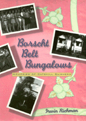

<body bgcolor="#FFFFFF" text="#000000" link="#0000FF" vlink="#CC0000" alink="#CC0000"><center><hr width="350" size="1" align="center" noshade>A history memoir and photo album of Jewish summers in the Catskills<hr width="350" size="1" align="center" noshade><p><a href="https://cdcshoppingcart.uchicago.edu/Cart/ChicagoBook.aspx?ISBN=9781566395854&&PRESS=temple" target="_top">Buy this book!</a> | <a href="https://cdcshoppingcart.uchicago.edu/Cart/Cart.aspx?PRESS=temple" target="_top">View Cart</a> | <a href="https://cdcshoppingcart.uchicago.edu/Cart/Cart.aspx?PRESS=temple" target="_top">Check Out</a></p><p></p></center><!--none//--><h1>Borscht Belt Bungalows</h1>
<H2>Memories of Catskill Summers</H2>
<h3>Irwin Richman</h3>
<P>cloth 1-56639-585-2 $70.50, Jan 98, <FONT COLOR=#990033>Available</FONT>
<br>paper 1-59213-190-5 $41.95, Apr 03, <FONT COLOR=#990033>Available</FONT>
<br>Electronic Book 1-43990-450-2 $41.95 <FONT COLOR=#990033>Available</FONT>
<BR> 256 pp
7x10
7&nbsp;figures 70&nbsp;halftones
</P><BLOCKQUOTE><I>"There are very few people who could do such a fine job of recapturing for us the remarkable world of the Catskill bungalow colonies."</I>
<br>&#151<b>Phil Brown</b>, Brown University<I></I></BLOCKQUOTE>
<p>Every year between 1920 and 1970, almost one million of New York City's Jewish population summered in the Catskills. Hundreds of thousands still do. While much has been written about grand hotels like Grossinger's and the Concord, little has appeared about the more modest bungalow colonies and kuchaleins ("cook for yourself" places) where more than 80 percent of Catskill visitors stayed.
<p>These were not glamorous places, and middle-class Jews today remember the colonies with either aversion or fondness. Irwin Richman's narrative, anecdotes, and photos recapture everything from the traffic jams leaving the city to the strategies for sneaking into the casinos of the big hotels. He brings to life the attitudes of the renters and the owners, the differences between the social activities and swimming pools advertised and what people actually received. He reminisces about the changing fashion of the guests and owners&#151everything that made summers memorable.
<p>The author remembers his boyhood: what it was like to spend summers outside the city, swimming in the Neversink, "noodling around," and helping with the bungalow operation, while Grandpa charged the tenants and acted as president of Congregation B'nai.
<BR>&nbsp;<h2>Excerpt</h2><P>Excerpt available at <a href="http://www.temple.edu/tempress">www.temple.edu/tempress</a></p>
<BR>&nbsp;<h2>Reviews</h2>
<p><I>"Richman delights the reader, not only with portraits of the people who rented the bungalows, but with the activities that occupied their time. He tells us of the small time entertainers who often began their careers in the mountain hotels and casinos and more often than not, ended their entertainment careers there too....well worth reading and, for some of us, evok[ing] long forgotten, pleasant memories."</I>
<br>&#151<b><I>Jewish Journal</I></b>
<p><i>"Richman's style is simple and direct....A pleasant Borscht Belt memoir, much like a Borscht Belt meal: excessive beyond nourishment, but hey, why not try a little?"</i>
<br>&#151<b><i>Kirkus Reviews</i></b>
<p><i>"A Jewish-American pastoral? Thoreau in the Catskills? Irwin Richman's marvelous </i>Borscht Belt Bungalows<i> is as much a literary work&#151a retrospect of country summers, now history&#151as a scholarly study....Let no reader of this lively first-person narrative be deceived that this is just a reminiscence, without scholarly depth. Richman collected an amazing range of information on Borscht Belt life and gracefully folds it into his memories."</i>
<br>&#151<b>Anne C. Rose</b>, <i>Pennsylvania History</i>
<p><i>"Richman is particularly suited to give us this historical overview, as a professor of American studies and history and as one who has made the pilgrimage to the mountains nearly every summer of his life, first to the bungalow colony of his grandparents and later as an employee at similar establishments. ...Richman is nostalgically superb in his recall of the importance of these annual gatherings in the communal context of an immigrant people, liberally quoting from fiction and nonfiction writings on this era and this place."</i>
<br>&#151<b><i>Publishers Weekly</i></b>
<p>Read <a href="../authors/1353_review.pdf">HAVENS; A Tradition Endures in the Catskills</a>, a review from <I>The New York Times on the Web</I>, 22 August 2003, written by John Marchese (pdf).
<BR>&nbsp;<h2>Contents</h2><P>
<p>Acknowledgments
<br>1. Introduction
<br>2. A. Richman, Woodbourne, New York
<br>3. Farmer's Life
<br>4. <I>Unzereh Menschen</I> (Our People)
<br>5. The River and the Woods
<br>6. Noodling Around: Kids at Large
<br>7. To Town: The Escape
<br>8. Daily Life: Mostly Adults
<br>9. The Quest for Entertainment
<br>10. Religion
<br>11. Summer Emergencies and Other Unforgetable Events
<br>12. The Day Camp
<br>13. Crime and Punishment
<br>14. An Age of Change
<br>15. Ghosts Along the Road
<br>Notes
<br>Bibliography
<br>Index
<br>Photographs
</P><BR>&nbsp;<H2>About the Author(s)</H2>
<table><tr><td valign="top"><img src="/tempress/authors/1353_au.gif" height="90" width="75"></td><td width="100%" valign="middle"><p><B>Irwin Richman</B>, Professor of American Studies and History at Pennsylvania State University at Harrisburg and author of <I>Catskills, NY</I>, has spent at least part of every summer of his life in the Catskills. Richman grew up in the bungalow colony business. His parents Alexander and Bertha owned a small colony, and his grandfather Abraham was in the mortgage business. From an early age Irwin went along on the detailed site visits to other colonies that were made prior to granting loans. He also worked as a counselor and as a camp director at their large colonies.</P></td></tr></table>
<BR><H2>Subject Categories</H2>
<p><A HREF="/tempress/general.html" TARGET="_top">General Interest</a>
<BR><A HREF="/tempress/jewish.html" TARGET="_top">Jewish Studies</a>
</p>
<p align="center"><a href="https://cdcshoppingcart.uchicago.edu/Cart/ChicagoBook.aspx?ISBN=9781566395854&&PRESS=temple" target="_top">Buy this book!</a> | <a href="https://cdcshoppingcart.uchicago.edu/Cart/Cart.aspx?PRESS=temple" target="_top">View Cart</a> | <a href="https://cdcshoppingcart.uchicago.edu/Cart/Cart.aspx?PRESS=temple" target="_top">Check Out</a></p><p><font face="Arial" size="1"><a href="copyright.html" onMouseOver="window.status='Web Copyright Policy';return true;" onMouseOut="window.status=''" title="Web Copyright Policy">&copy;</a> 2015 <a href="http://www.temple.edu" target="new" onMouseOver="window.status='Link to Temple University home page';return true;" onMouseOut="window.status=''" title="Link to Temple University home page">Temple University</a>. All Rights Reserved. http://www.temple.edu/tempress/titles/1353_reg.html</font></p>